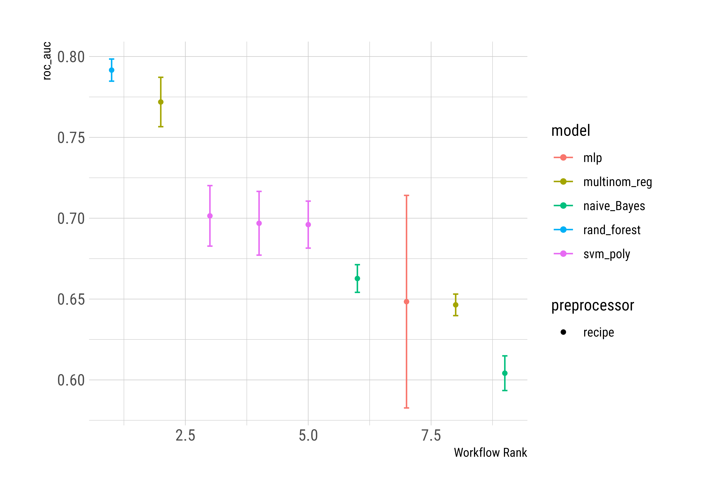
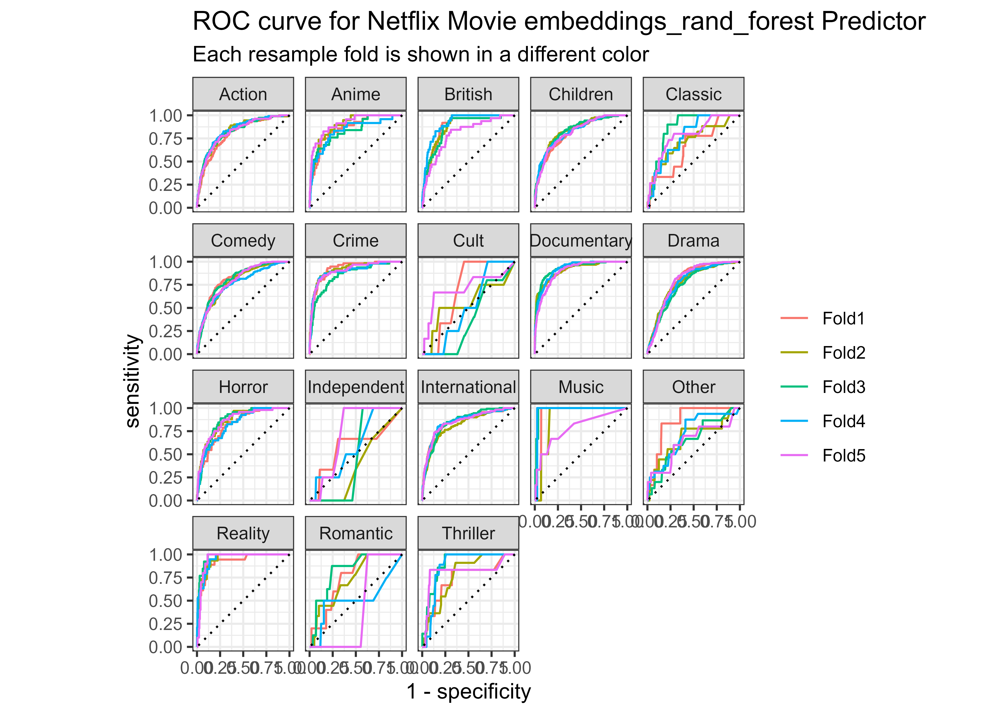

Netflix Titles NLP
Jim Gruman
April 20, 2021
Last updated: 2021-05-23
Checks: 6 1
Knit directory: myTidyTuesday/
This reproducible R Markdown analysis was created with workflowr (version 1.6.2). The Checks tab describes the reproducibility checks that were applied when the results were created. The Past versions tab lists the development history.
Great! Since the R Markdown file has been committed to the Git repository, you know the exact version of the code that produced these results.
Great job! The global environment was empty. Objects defined in the global environment can affect the analysis in your R Markdown file in unknown ways. For reproduciblity it’s best to always run the code in an empty environment.
The command set.seed(20200907) was run prior to running the code in the R Markdown file. Setting a seed ensures that any results that rely on randomness, e.g. subsampling or permutations, are reproducible.
Great job! Recording the operating system, R version, and package versions is critical for reproducibility.
- unnamed-chunk-1
To ensure reproducibility of the results, delete the cache directory 2021_04_20_cache and re-run the analysis. To have workflowr automatically delete the cache directory prior to building the file, set delete_cache = TRUE when running wflow_build() or wflow_publish().
Great job! Using relative paths to the files within your workflowr project makes it easier to run your code on other machines.
Great! You are using Git for version control. Tracking code development and connecting the code version to the results is critical for reproducibility.
The results in this page were generated with repository version 093121a. See the Past versions tab to see a history of the changes made to the R Markdown and HTML files.
Note that you need to be careful to ensure that all relevant files for the analysis have been committed to Git prior to generating the results (you can use wflow_publish or wflow_git_commit). workflowr only checks the R Markdown file, but you know if there are other scripts or data files that it depends on. Below is the status of the Git repository when the results were generated:
Ignored files:
Ignored: .Rhistory
Ignored: .Rproj.user/
Ignored: analysis/figure/
Ignored: analysis/rsconnect/
Ignored: data/03/
Ignored: data/lab_51_torch_tabnet/
Ignored: fonts/
Ignored: rosm.cache/
Untracked files:
Untracked: analysis/.vscode/
Untracked: analysis/2021_04_20_cache/
Unstaged changes:
Modified: analysis/BackboneWatershed.Rmd
Note that any generated files, e.g. HTML, png, CSS, etc., are not included in this status report because it is ok for generated content to have uncommitted changes.
These are the previous versions of the repository in which changes were made to the R Markdown (analysis/2021_04_20.Rmd) and HTML (docs/2021_04_20.html) files. If you’ve configured a remote Git repository (see ?wflow_git_remote), click on the hyperlinks in the table below to view the files as they were in that past version.
| File | Version | Author | Date | Message |
|---|---|---|---|---|
| Rmd | 093121a | opus1993 | 2021-05-23 | wflow_publish(“analysis/2021_04_20.Rmd”) |
| html | 625aa14 | opus1993 | 2021-05-17 | Build site. |
| Rmd | 71a5368 | opus1993 | 2021-05-17 | wflow_publish(“analysis/2021_04_20.Rmd”) |
| Rmd | 2eddec8 | opus1993 | 2021-05-17 | wflow_publish(“analysis/2021_04_20.Rmd”) |
| html | f3c8ae1 | opus1993 | 2021-05-10 | Build site. |
| Rmd | aeb6ceb | opus1993 | 2021-05-10 | wflow_publish(“analysis/2021_04_20.Rmd”) |
| html | be4bfd3 | opus1993 | 2021-05-10 | Build site. |
| Rmd | a457430 | opus1993 | 2021-05-10 | wflow_publish(“analysis/2021_04_20.Rmd”) |
| html | ef56748 | opus1993 | 2021-05-10 | Build site. |
| Rmd | 243dce9 | opus1993 | 2021-05-10 | wflow_publish(“analysis/2021_04_20.Rmd”) |
| html | 44475f8 | opus1993 | 2021-05-10 | Build site. |
| Rmd | 4029448 | opus1993 | 2021-05-10 | wflow_publish(“analysis/2021_04_20.Rmd”) |
| html | 4b0720e | opus1993 | 2021-05-07 | Build site. |
| Rmd | 5bbcff4 | opus1993 | 2021-05-07 | wflow_publish(“analysis/2021_04_20.Rmd”) |
| html | 754005b | opus1993 | 2021-05-07 | Build site. |
| Rmd | 1ea4376 | opus1993 | 2021-05-07 | wflow_publish(“analysis/2021_04_20.Rmd”) |
| html | 0df4310 | opus1993 | 2021-05-07 | Build site. |
| Rmd | f6ff808 | opus1993 | 2021-05-07 | wflow_publish(“analysis/2021_04_20.Rmd”) |
| html | 39a5603 | opus1993 | 2021-05-07 | Build site. |
| Rmd | 19e2512 | opus1993 | 2021-05-07 | wflow_publish(“analysis/2021_04_20.Rmd”) |
knitr::include_graphics("assets/netflix.png", error = FALSE)
The #TidyTuesday data this week is Netflix’s streaming catalog titles with descriptions, genre classifications, actors, directors, dates, and other metadata.
Introduction
First, I want to acknowledge that I benefited from the guidance and work of the following:
David Robinson’s Youtube screencast and code at the repo here.
Julia Silge’s Which #TidyTuesday Netflix titles are movies and which are TV shows?
Mark H White, PhD’s blog post EXPLORING THE STAR WARS “PREQUEL RENAISSANCE” USING TIDYMODELS AND WORKFLOWSETS
Max Kuhn and Julia Silge’s in-progres book Tidy Modeling With R Chapter 15: Screening Many Models
Max Kuhn’s LA R User Group talk on 18May2021
My goal is to explore and classify using the tidymodels framework and workflowsets to predict the genre of the titles on the streaming services. Dr. Silge hinted in her broadcast that a multi-class prediction would be possible with a neural net. Let’s explore that path.
First, let’s load libraries and set a ggplot theme:
knitr::opts_chunk$set(
echo = TRUE,
message = FALSE,
warning = FALSE,
cache = FALSE,
cache.lazy = FALSE,
df_print = "paged",
dpi = 300,
tidy = "styler",
dev = "ragg_png",
autodep = TRUE
)
suppressPackageStartupMessages({
library(tidyverse)
library(lubridate)
library(hrbrthemes)
library(tidytext)
library(tidymodels)
library(themis)
library(textrecipes)
library(discrim)
library(finetune) # fast hyperparameter selection
library(workflowsets)
library(tidyposterior)
library(stacks)
})
update_geom_font_defaults(font_rc_light)
ggplot2::theme_set(hrbrthemes::theme_ipsum_rc() +
ggplot2::theme(plot.title.position = "plot",
plot.caption.position = "plot"))Let’s load the data and clean up the duration movie field and date_added fields.
netflix_titles <-
tidytuesdayR::tt_load("2021-04-20")$netflix_titles %>%
separate(duration,
c("duration", "duration_units"),
sep = " ",
convert = TRUE) %>%
mutate(date_added = mdy(date_added),
year_added = year(date_added))
Downloading file 1 of 1: `netflix_titles.csv`Exploration
Skimming
The dataset includes 7,787 titles, both as movies and TV shows. Other summary details of the dataset, as provided by skimr
skimr::skim(netflix_titles) | Name | netflix_titles |
| Number of rows | 7787 |
| Number of columns | 14 |
| _______________________ | |
| Column type frequency: | |
| character | 10 |
| Date | 1 |
| numeric | 3 |
| ________________________ | |
| Group variables | None |
Variable type: character
| skim_variable | n_missing | complete_rate | min | max | empty | n_unique | whitespace |
|---|---|---|---|---|---|---|---|
| show_id | 0 | 1.00 | 2 | 5 | 0 | 7787 | 0 |
| type | 0 | 1.00 | 5 | 7 | 0 | 2 | 0 |
| title | 0 | 1.00 | 1 | 104 | 0 | 7787 | 0 |
| director | 2389 | 0.69 | 2 | 208 | 0 | 4049 | 0 |
| cast | 718 | 0.91 | 3 | 771 | 0 | 6831 | 0 |
| country | 507 | 0.93 | 4 | 123 | 0 | 681 | 0 |
| rating | 7 | 1.00 | 1 | 8 | 0 | 14 | 0 |
| duration_units | 0 | 1.00 | 3 | 7 | 0 | 3 | 0 |
| listed_in | 0 | 1.00 | 6 | 79 | 0 | 492 | 0 |
| description | 0 | 1.00 | 61 | 248 | 0 | 7769 | 0 |
Variable type: Date
| skim_variable | n_missing | complete_rate | min | max | median | n_unique |
|---|---|---|---|---|---|---|
| date_added | 10 | 1 | 2008-01-01 | 2021-01-16 | 2019-03-08 | 1512 |
Variable type: numeric
| skim_variable | n_missing | complete_rate | mean | sd | p0 | p25 | p50 | p75 | p100 | hist |
|---|---|---|---|---|---|---|---|---|---|---|
| release_year | 0 | 1 | 2013.93 | 8.76 | 1925 | 2013 | 2017 | 2018 | 2021 | ▁▁▁▁▇ |
| duration | 0 | 1 | 69.12 | 50.95 | 1 | 2 | 88 | 106 | 312 | ▆▇▂▁▁ |
| year_added | 10 | 1 | 2018.49 | 1.39 | 2008 | 2018 | 2019 | 2020 | 2021 | ▁▁▁▆▇ |
Genres
The listed_in character field associates individual titles with one or more genres. When separated out, the count of titles in each genre includes:
netflix_titles %>%
separate_rows(listed_in, sep = ", ") %>%
count(listed_in)Film Duration
Let’s take a quick peek at the median time duration of only the movies for each genre. Note again that the same title can often be counted in more than one genre grouping.
netflix_titles %>%
separate_rows(listed_in, sep = ", ") %>%
group_by(type, genre = listed_in) %>%
summarize(
n = n(),
median_duration = median(duration),
.groups = "drop"
) %>%
mutate(genre = glue::glue("{ genre } ({ n })")) %>%
filter(type == "Movie") %>%
filter(genre != "Movies") %>%
mutate(genre = fct_reorder(genre, median_duration)) %>%
ggplot(aes(median_duration, genre)) +
geom_col(fill = "red", show.legend = FALSE) +
geom_text(
aes(x = median_duration - 3,
label = median_duration),
color = "white") +
labs(x = "Media Streaming Netflix Movie Duration (Minutes)",
y = NULL
)
The median of Netflix titles labeled as Documentaries and Stand-Up Comedy movies are shorter in duration than Dramas and Classic Movies.
Feature Engineering
Given the description, cast members, director, and release_year, can we build a useful model to predict the genre?
Unbalanced multi-class problems are especially challenging. And in the Netflix dataset, most movies belong to two or three genres at the same time. To make this problem just a little less complex, we will bundle some genre’s into logical groupings. I am also only using the first listed_in genre, as the primary. The result is 20 genres.
netflix_df <- netflix_titles %>%
select(genre = listed_in,
show_id,
description,
cast,
director,
release_year) %>%
separate_rows(genre, sep = ", ") %>%
mutate(genre = case_when(
str_detect(genre, "International") ~ "International",
str_detect(genre, "Romantic") ~ "Romantic",
str_detect(genre, "Drama") ~ "Drama",
str_detect(genre, "Action") ~ "Action",
str_detect(genre, "Comed") ~ "Comedy",
str_detect(genre, "Cult") ~ "Cult",
str_detect(genre, "Thrill") ~ "Thriller",
str_detect(genre, "Teen|Children|Kids") ~ "Children",
str_detect(genre, "Science|Docu") ~ "Documentary",
str_detect(genre, "Anime") ~ "Anime",
str_detect(genre, "Horror") ~ "Horror",
str_detect(genre, "Independent") ~ "Independent",
str_detect(genre, "Crime") ~ "Crime",
str_detect(genre, "Music") ~ "Music",
str_detect(genre, "British") ~ "British",
str_detect(genre, "Reality") ~ "Reality",
str_detect(genre, "Classic") ~ "Classic",
str_detect(genre, "Myster") ~ "Mysteries",
str_detect(genre, "Faith") ~ "Faith",
TRUE ~ "Other"
)) %>%
group_by(show_id) %>%
mutate(position = row_number()) %>%
ungroup() %>%
pivot_wider(names_from = position,
values_from = genre,
names_prefix = "genre") %>%
mutate(genre1 = as.factor(genre1))netflix_df %>%
count(genre1) %>%
mutate(pct = n / sum(n)) %>%
ggplot(aes(pct, fct_reorder(genre1, pct))) +
geom_col(fill = "lightblue") +
scale_x_continuous(labels = scales::percent) +
geom_label(aes(label = scales::percent(pct, accuracy = .1))) +
labs(title = "Severe Imbalance in Media Genre Classification",
y = NULL, x = NULL)
Let’s split the data using the default 3:1 ratio of training-to-test and resample the training set using 5-fold cross-validation. V-fold cross-validation randomly splits the data into V groups (5) of roughly equal size (called “folds”). A resample of the analysis data consists of V-1 (4) of the folds while the assessment set contains the final fold. In basic V-fold cross-validation (i.e. no repeats), the number of resamples is equal to V.
Cross Validation
The strata argument causes the random sampling to be conducted within the stratification variable.
set.seed(1501)
netflix_split <- initial_split(netflix_df, strata = genre1)
netflix_train <- training(netflix_split)
netflix_test <- testing(netflix_split)
netflix_folds <- vfold_cv(netflix_train,
v = 5, strata = genre1)ggplot(netflix_folds %>% tidy(),
aes(Fold, Row, fill = Data)) +
geom_tile() +
labs(caption = "Resampling strategy")
Our dataset will be pre-processed through several different recipes that engineer text features by tokenizing the description, cast, and the director fields.
The first recipe applies filters to use the words, cast members, and director with the 30 highest term frequencies after removing stop words and stemming.
The second filter the description words to remove stopwords and then builds 25 word embeddings with Glove Twitter 27B. Learn more about word embeddings and pre-trained model transfer learning here. The recipe goes on to hash the cast member and director features into numeric variables with the hashing trick. All models are centered and scaled. There are no missing values.
With a big multi-class challenge, we need to take action to balance the classes. smote upsamples members of the minority classes with nearest neighbors imputation (in the training set only). upsampling replicates rows of the minority classes to match the count of the members of the largest class member.
Pre-processing
(token_rec <- recipe(genre1 ~ description + cast + director, data = netflix_train) %>%
step_tokenize(description) %>%
step_stopwords(description))Data Recipe
Inputs:
role #variables
outcome 1
predictor 3
Operations:
Tokenization for description
Stop word removal for description(upsample_rec <- token_rec %>%
step_upsample(genre1))Data Recipe
Inputs:
role #variables
outcome 1
predictor 3
Operations:
Tokenization for description
Stop word removal for description
Up-sampling based on genre1(filter_upsample_rec <- upsample_rec %>%
step_stopwords(description) %>%
step_stem(description) %>%
step_tokenfilter(description, max_tokens = 30) %>%
step_tokenize(cast,
token = "regex",
options = list(pattern = ", ")) %>%
step_tokenfilter(cast, max_tokens = 30) %>%
step_tokenize(director,
token = "regex",
options = list(pattern = ", ")) %>%
step_tokenfilter(director, max_tokens = 30) %>%
step_tf(description) %>%
step_tf(cast) %>%
step_tf(director) %>%
step_normalize(all_numeric()))Data Recipe
Inputs:
role #variables
outcome 1
predictor 3
Operations:
Tokenization for description
Stop word removal for description
Up-sampling based on genre1
Stop word removal for description
Stemming for description
Text filtering for description
Tokenization for cast
Text filtering for cast
Tokenization for director
Text filtering for director
Term frequency with description
Term frequency with cast
Term frequency with director
Centering and scaling for all_numeric()(embeddings_upsample_rec <- upsample_rec %>%
textrecipes::step_word_embeddings(description,
embeddings = textdata::embedding_glove27b()) %>%
step_tokenize(cast,
token = "regex",
options = list(pattern = ", ")) %>%
step_texthash(cast, num_terms = 50) %>%
step_tokenize(director,
token = "regex",
options = list(pattern = ", ")) %>%
step_texthash(director, num_terms = 50)) %>%
step_normalize(all_numeric())Data Recipe
Inputs:
role #variables
outcome 1
predictor 3
Operations:
Tokenization for description
Stop word removal for description
Up-sampling based on genre1
Word embeddings aggregated from description
Tokenization for cast
Feature hashing with cast
Tokenization for director
Feature hashing with director
Centering and scaling for all_numeric()Filtered Recipe
A look at the features in the fully pre-processed, “filtered”, downsampled training set:
filter_upsample_rec %>%
prep() %>%
bake(new_data = NULL) %>%
glimpse()Rows: 21,006
Columns: 91
$ genre1 <fct> Action, Action, Action, Action, Actio~
$ tf_description_becom <dbl> -0.2313275, -0.2313275, -0.2313275, -~
$ tf_description_daughter <dbl> -0.210098, -0.210098, -0.210098, -0.2~
$ tf_description_famili <dbl> -0.2514275, -0.2514275, -0.2514275, -~
$ tf_description_find <dbl> -0.2653923, -0.2653923, -0.2653923, -~
$ tf_description_friend <dbl> -0.2528306, -0.2528306, -0.2528306, -~
$ tf_description_get <dbl> -0.2017021, -0.2017021, -0.2017021, -~
$ tf_description_girl <dbl> -0.1988464, -0.1988464, -0.1988464, -~
$ tf_description_group <dbl> -0.2007762, -0.2007762, -0.2007762, 4~
$ tf_description_help <dbl> -0.220024, -0.220024, -0.220024, -0.2~
$ tf_description_home <dbl> -0.2144996, -0.2144996, -0.2144996, -~
$ tf_description_life <dbl> -0.307563, -0.307563, -0.307563, -0.3~
$ tf_description_live <dbl> -0.2268785, -0.2268785, -0.2268785, -~
$ tf_description_love <dbl> -0.2384458, -0.2384458, -0.2384458, -~
$ tf_description_make <dbl> 4.6201758, -0.2130619, -0.2130619, -0~
$ tf_description_man <dbl> -0.230756, -0.230756, -0.230756, -0.2~
$ tf_description_murder <dbl> -0.2269621, -0.2269621, -0.2269621, -~
$ tf_description_must <dbl> -0.2123028, -0.2123028, -0.2123028, -~
$ tf_description_mysteri <dbl> -0.2050992, -0.2050992, -0.2050992, -~
$ tf_description_new <dbl> -0.3038657, -0.3038657, 3.2207078, -0~
$ tf_description_on <dbl> -0.1786338, 4.4311706, -0.1786338, -0~
$ tf_description_seri <dbl> -0.2439569, -0.2439569, -0.2439569, -~
$ tf_description_show <dbl> -0.1950627, -0.1950627, -0.1950627, -~
$ tf_description_stori <dbl> -0.2066067, -0.2066067, -0.2066067, -~
$ tf_description_take <dbl> -0.2630578, -0.2630578, -0.2630578, -~
$ tf_description_turn <dbl> -0.2138775, -0.2138775, -0.2138775, -~
$ tf_description_two <dbl> -0.230756, -0.230756, -0.230756, -0.2~
$ tf_description_woman <dbl> -0.2306235, -0.2306235, -0.2306235, -~
$ tf_description_world <dbl> -0.2906177, -0.2906177, -0.2906177, 3~
$ tf_description_year <dbl> -0.2104858, -0.2104858, -0.2104858, -~
$ tf_description_young <dbl> -0.2965445, -0.2965445, -0.2965445, -~
$ `tf_cast_Ai Kayano` <dbl> -0.07736936, -0.07736936, -0.07736936~
$ `tf_cast_Alfred Molina` <dbl> -0.07768008, -0.07768008, -0.07768008~
$ `tf_cast_Brian White` <dbl> -0.07087626, -0.07087626, -0.07087626~
$ `tf_cast_Callie Hernandez` <dbl> -0.07579711, -0.07579711, -0.07579711~
$ `tf_cast_Daisuke Ono` <dbl> -0.07705742, -0.07705742, -0.07705742~
$ `tf_cast_Dale Dickey` <dbl> -0.07674424, -0.07674424, -0.07674424~
$ `tf_cast_Dane DeHaan` <dbl> -0.07121467, -0.07121467, -0.07121467~
$ `tf_cast_David Attenborough` <dbl> -0.07087626, -0.07087626, -0.07087626~
$ `tf_cast_Graham Phillips` <dbl> -0.07255284, -0.07255284, -0.07255284~
$ `tf_cast_Jacob Ming-Trent` <dbl> -0.07087626, -0.07087626, -0.07087626~
$ `tf_cast_Jacqueline Toboni` <dbl> -0.07155151, -0.07155151, -0.07155151~
$ `tf_cast_James Hetfield` <dbl> -0.07515922, -0.07515922, -0.07515922~
$ `tf_cast_Jared Padalecki` <dbl> -0.07121467, -0.07121467, -0.07121467~
$ `tf_cast_Junichi Suwabe` <dbl> -0.07921585, -0.07921585, -0.07921585~
$ `tf_cast_Kana Hanazawa` <dbl> -0.07829792, -0.07829792, -0.07829792~
$ `tf_cast_Kate Walsh` <dbl> -0.09425941, -0.09425941, -0.09425941~
$ `tf_cast_Kerr Smith` <dbl> -0.07155151, -0.07155151, -0.07155151~
$ `tf_cast_Kirk Hammett` <dbl> -0.07515922, -0.07515922, -0.07515922~
$ `tf_cast_Lars Ulrich` <dbl> -0.07515922, -0.07515922, -0.07515922~
$ `tf_cast_Mamoru Miyano` <dbl> -0.07288362, -0.07288362, -0.07288362~
$ `tf_cast_Matt LeBlanc` <dbl> -0.07386728, -0.07386728, -0.07386728~
$ `tf_cast_Natalie Martinez` <dbl> -0.07386728, -0.07386728, -0.07386728~
$ `tf_cast_Nicolas Cage` <dbl> -0.07982208, -0.07982208, -0.07982208~
$ `tf_cast_Richard Roundtree` <dbl> -0.08072311, -0.08072311, -0.08072311~
$ `tf_cast_Robert Patrick` <dbl> -0.08131839, -0.08131839, -0.08131839~
$ `tf_cast_Robert Trujillo` <dbl> -0.07515922, -0.07515922, -0.07515922~
$ `tf_cast_Takahiro Sakurai` <dbl> -0.09005657, -0.09005657, -0.09005657~
$ `tf_cast_Tomokazu Sugita` <dbl> -0.07921585, -0.07921585, -0.07921585~
$ `tf_cast_Yuichi Nakamura` <dbl> -0.07121467, -0.07121467, -0.07121467~
$ `tf_cast_Yuki Kaji` <dbl> -0.08161445, -0.08161445, -0.08161445~
$ `tf_director_Aaron Moorhead` <dbl> -0.05985843, -0.05985843, -0.05985843~
$ `tf_director_Àlex Pastor` <dbl> -0.06298204, -0.06298204, -0.06298204~
$ `tf_director_Alex Timbers` <dbl> -0.06259999, -0.06259999, -0.06259999~
$ `tf_director_Anthony Byrne` <dbl> -0.06221562, -0.06221562, -0.06221562~
$ `tf_director_Barbra Streisand` <dbl> -0.06448799, -0.06448799, -0.06448799~
$ `tf_director_Benjamin Dickinson` <dbl> -0.06632313, -0.06632313, -0.06632313~
$ `tf_director_Bo Burnham` <dbl> -0.06559513, -0.06559513, -0.06559513~
$ `tf_director_Chris Baugh` <dbl> -0.06259999, -0.06259999, -0.06259999~
$ `tf_director_Christopher Guest` <dbl> -0.06259999, -0.06259999, -0.06259999~
$ `tf_director_Christopher Storer` <dbl> -0.06596012, -0.06596012, -0.06596012~
$ `tf_director_Daan Jansen` <dbl> -0.06143979, -0.06143979, -0.06143979~
$ `tf_director_David McCracken` <dbl> -0.06259999, -0.06259999, -0.06259999~
$ `tf_director_David Pastor` <dbl> -0.06298204, -0.06298204, -0.06298204~
$ `tf_director_Devin Chanda` <dbl> -0.06810969, -0.06810969, -0.06810969~
$ `tf_director_Fabrice Du Welz` <dbl> -0.06298204, -0.06298204, -0.06298204~
$ `tf_director_Graham Phillips` <dbl> -0.07087626, -0.07087626, -0.07087626~
$ `tf_director_Jeremy Konner` <dbl> -0.06596012, -0.06596012, -0.06596012~
$ `tf_director_Jeremy Saulnier` <dbl> -0.06336183, -0.06336183, -0.06336183~
$ `tf_director_Jim Gable` <dbl> -0.06448799, -0.06448799, -0.06448799~
$ `tf_director_John Suits` <dbl> -0.06522814, -0.06522814, -0.06522814~
$ `tf_director_Jonathan Demme` <dbl> -0.07483827, -0.07483827, -0.07483827~
$ `tf_director_Matt Askem` <dbl> -0.07288362, -0.07288362, -0.07288362~
$ `tf_director_Nimród Antal` <dbl> -0.06915987, -0.06915987, -0.06915987~
$ `tf_director_Parker Phillips` <dbl> -0.07087626, -0.07087626, -0.07087626~
$ `tf_director_Paul Dugdale` <dbl> -0.09032479, -0.09032479, -0.09032479~
$ `tf_director_Riki Lindhome` <dbl> -0.06596012, -0.06596012, -0.06596012~
$ `tf_director_Ron Howard` <dbl> -0.0602576, -0.0602576, -0.0602576, -~
$ `tf_director_Sam Wrench` <dbl> -0.06259999, -0.06259999, -0.06259999~
$ `tf_director_Stijn Verlinde` <dbl> -0.06143979, -0.06143979, -0.06143979~
$ `tf_director_Youssef Chahine` <dbl> -0.07705742, -0.07705742, -0.07705742~Text Embeddings Recipe
And a look at the features of the downsampled “embeddings” recipe:
embeddings_upsample_rec %>%
prep() %>%
bake(new_data = NULL) %>%
glimpse()Rows: 21,006
Columns: 126
$ director_hash01 <dbl> 0, 0, 0, 0, 0, 0, 0, 0, 0, 0, 0, 0, 0, 0, 0, 0, 0, 0, ~
$ director_hash02 <dbl> 0, 0, 0, 0, 0, 0, 0, 1, 0, 0, 0, 0, 0, 0, 0, 0, 0, 0, ~
$ director_hash03 <dbl> 0, 0, 0, 0, 0, 0, 0, 0, 0, 0, 0, 0, 0, 0, 0, 0, 0, 0, ~
$ director_hash04 <dbl> 0, 0, 0, 0, 0, 0, 0, 0, 0, 0, 0, 0, 0, 0, 0, 0, 0, 0, ~
$ director_hash05 <dbl> 0, 0, 0, 0, 0, 0, 0, 0, 0, 0, 0, 0, 1, 0, 0, 0, 0, 0, ~
$ director_hash06 <dbl> 0, 0, 0, 0, 0, 1, 0, 0, 0, 0, 0, 0, 0, 0, 0, 0, 0, 0, ~
$ director_hash07 <dbl> 0, 0, 0, 0, 0, 0, 0, 0, 0, 0, 0, 0, 0, 0, 0, 0, 0, 0, ~
$ director_hash08 <dbl> 0, 0, 0, 0, 0, 0, 0, 0, 0, 0, 0, 0, 0, 0, 0, 0, 0, 0, ~
$ director_hash09 <dbl> 0, 0, 0, 0, 0, 0, 0, 0, 0, 0, 0, 0, 0, 0, 0, 0, 0, 0, ~
$ director_hash10 <dbl> 0, 0, 0, 1, 0, 0, 0, 0, 0, 0, 0, 0, 0, 0, 1, 0, 0, 0, ~
$ director_hash11 <dbl> 0, 0, 0, 0, 0, 0, 0, 0, 0, 0, 0, 0, 0, 0, 0, 0, 0, 0, ~
$ director_hash12 <dbl> 0, 0, 0, 0, 0, 0, 0, 0, 0, 0, 0, 0, 0, 0, 0, 0, 0, 0, ~
$ director_hash13 <dbl> 0, 0, 0, 0, 0, 0, 0, 0, 0, 0, 0, 1, 0, 0, 0, 0, 0, 0, ~
$ director_hash14 <dbl> 1, 0, 0, 0, 0, 0, 0, 0, 1, 0, 0, 0, 0, 0, 0, 0, 0, 0, ~
$ director_hash15 <dbl> 0, 0, 0, 0, 0, 0, 0, 0, 0, 0, 1, 0, 0, 0, 0, 0, 0, 0, ~
$ director_hash16 <dbl> 0, 0, 0, 0, 0, 0, 0, 0, 0, 0, 0, 0, 0, 0, 0, 0, 0, 0, ~
$ director_hash17 <dbl> 0, 0, 0, 0, 0, 0, 0, 0, 0, 0, 0, 0, 0, 0, 0, 0, 0, 0, ~
$ director_hash18 <dbl> 0, 0, 0, 0, 0, 0, 0, 0, 0, -1, 0, 0, 0, 0, 0, 0, 0, 0,~
$ director_hash19 <dbl> 0, 0, 0, 0, 0, 0, 0, 0, 0, 0, 0, 0, 0, 0, 0, 0, 0, 0, ~
$ director_hash20 <dbl> 0, 0, 0, 0, 0, 0, 0, 0, 0, 0, 0, 0, 0, 0, 0, 0, 0, 0, ~
$ director_hash21 <dbl> 0, 0, 0, 0, 0, 0, 0, 0, 0, 0, 0, 0, 0, 0, 0, 0, 0, 0, ~
$ director_hash22 <dbl> 0, 0, 1, 0, 0, 0, 0, 0, 0, 0, 0, 0, 0, 0, 0, 0, 0, 0, ~
$ director_hash23 <dbl> 0, 0, 0, 0, 0, 0, 0, 0, 0, 0, 0, 0, 0, 0, 0, 0, 0, 0, ~
$ director_hash24 <dbl> 0, 0, 0, 0, 0, 0, 0, 0, 0, 0, 0, 0, 0, 0, 0, 0, 0, 0, ~
$ director_hash25 <dbl> 0, 0, 0, 0, 0, 0, 0, 0, 0, 0, 0, 0, 0, 0, 0, 0, 0, 0, ~
$ director_hash26 <dbl> 0, 0, 0, 0, 0, 0, 0, 0, 0, 0, 0, 0, 0, 0, 0, 0, 0, 0, ~
$ director_hash27 <dbl> 0, 0, 0, 0, 0, 0, 0, 0, 0, 0, 0, 0, 0, 0, 0, 0, 0, 0, ~
$ director_hash28 <dbl> 0, 0, 0, 0, 0, 0, 0, 0, 0, 0, 0, 0, 0, 0, 0, 0, 0, 0, ~
$ director_hash29 <dbl> 0, 0, 0, 0, 0, 0, 0, 0, 0, 0, 0, 0, 0, 0, 0, -1, 0, 0,~
$ director_hash30 <dbl> 0, 0, 0, 0, 0, 0, 0, 0, 0, 0, 0, 0, 0, 0, 0, 0, 0, 0, ~
$ director_hash31 <dbl> 0, 0, 0, 0, 0, 0, 0, 0, 0, 0, 0, 0, 0, 0, 0, 0, 0, 0, ~
$ director_hash32 <dbl> 0, 0, 0, 0, 0, 0, 0, 0, 0, 0, 0, 0, 0, 0, 0, 0, 0, 0, ~
$ director_hash33 <dbl> 0, 0, 0, 0, 0, 0, 0, 0, 0, 0, 0, 0, 0, 0, 0, 0, 0, 0, ~
$ director_hash34 <dbl> 0, 1, 0, 0, 0, 0, 0, 0, 0, 0, 0, 0, 0, 0, 0, 0, 1, 0, ~
$ director_hash35 <dbl> 0, 0, 0, 0, 0, 0, 0, 0, 0, 0, 0, 0, 0, 0, 0, 0, 0, 0, ~
$ director_hash36 <dbl> 0, 0, 0, 0, 0, 0, 0, 0, 0, 0, 0, -1, 0, 0, 0, 0, 0, 0,~
$ director_hash37 <dbl> 0, 0, 0, 0, 0, 0, 0, 0, 0, 0, 0, 0, 0, 0, 0, 0, 0, 0, ~
$ director_hash38 <dbl> 0, 0, 0, 0, 0, 0, 0, 0, 0, 0, 0, 0, 0, 0, 0, 0, 0, 0, ~
$ director_hash39 <dbl> 0, 0, 0, 0, 0, 0, 0, 0, 0, 0, 0, 0, 0, 0, 0, 0, 0, 0, ~
$ director_hash40 <dbl> 0, 0, 0, 0, 0, 0, 0, 0, 0, 0, 0, 0, 0, 0, 0, 0, 0, 0, ~
$ director_hash41 <dbl> 0, 0, 0, 0, 0, 0, 0, 0, 0, 0, 0, 0, 0, 0, 0, 0, 0, 0, ~
$ director_hash42 <dbl> 0, 0, 0, 0, 0, 0, 0, 0, 0, 0, 0, 0, 0, 0, 0, 0, 0, 0, ~
$ director_hash43 <dbl> 0, 0, 0, 0, -1, 0, 0, 0, 0, 0, 0, 0, 0, 0, 0, 0, 0, 0,~
$ director_hash44 <dbl> 0, 0, 0, 0, 0, 0, 0, 0, 0, 0, 0, 0, 0, 0, 0, 0, 0, 0, ~
$ director_hash45 <dbl> 0, 0, 0, 0, 0, 0, 0, 0, 0, 0, 0, 0, 0, 0, 0, 0, 0, 0, ~
$ director_hash46 <dbl> 0, 0, 0, 0, 0, 0, -1, 0, 0, 0, 0, 0, 0, -1, 0, 0, 0, 0~
$ director_hash47 <dbl> 0, 0, 0, 0, 0, 0, 0, 0, 0, 0, 0, 0, 0, 0, 0, 0, 0, 0, ~
$ director_hash48 <dbl> 0, 0, 0, 0, 0, 0, 0, 0, 0, 0, 0, 0, 0, 0, 0, 0, 0, 0, ~
$ director_hash49 <dbl> 0, 0, 0, 0, 0, 0, 0, 0, 0, 0, 0, 0, 0, 0, 0, 0, 0, 1, ~
$ director_hash50 <dbl> 0, 0, 0, 0, 0, 0, 0, 0, 0, 0, 0, 0, 0, 0, 0, 0, 0, 0, ~
$ cast_hash01 <dbl> 0, 0, 0, 0, 0, -1, 0, 0, 0, 0, 0, 0, 0, 0, 0, 1, 0, -1~
$ cast_hash02 <dbl> 0, -1, 0, 0, 0, 2, 0, -1, 0, 0, 2, 0, 0, -1, 0, 0, 0, ~
$ cast_hash03 <dbl> 0, 0, 0, 0, 0, 0, 0, 0, 0, 0, 0, 0, 0, 0, 0, 1, 0, 0, ~
$ cast_hash04 <dbl> 0, 0, 1, 1, 0, 0, 0, 1, 0, 0, 0, 0, 0, 0, 0, 0, 0, 0, ~
$ cast_hash05 <dbl> 0, -1, 0, 0, 0, 0, 0, 0, 0, 1, -1, -1, 0, 0, 0, 1, 0, ~
$ cast_hash06 <dbl> 0, 0, 0, -1, 1, 0, 0, -1, 0, 0, 0, 0, 0, 0, -1, -2, 0,~
$ cast_hash07 <dbl> 0, 1, 0, 0, 0, 0, 0, 0, 0, 0, 0, -1, 0, 0, 0, 0, 1, 0,~
$ cast_hash08 <dbl> 0, 0, 1, 0, 0, 0, -1, 0, 0, 0, 0, 0, 0, 0, 0, -1, 0, 0~
$ cast_hash09 <dbl> 0, 0, 0, 0, 0, 0, 0, 0, 0, 0, 0, 0, 0, 0, 0, 0, 0, 0, ~
$ cast_hash10 <dbl> 0, 0, -1, 0, 1, -1, 0, 0, 0, 0, 1, 0, 0, 0, 0, 0, 0, 0~
$ cast_hash11 <dbl> 0, 0, 0, 0, 0, 0, 0, 0, 0, 0, 0, 0, 0, 0, 0, -1, 0, 0,~
$ cast_hash12 <dbl> 0, -1, 0, -1, 0, -1, 0, 0, 0, 0, 0, 0, 0, 0, -1, 0, 0,~
$ cast_hash13 <dbl> 0, 1, 0, 0, 0, 0, 0, 0, 0, 0, 0, 0, 0, 0, 0, 0, 0, 0, ~
$ cast_hash14 <dbl> 1, 0, 0, 0, 0, 0, 0, 0, 0, 0, 0, 0, 1, 0, 0, 0, 0, 0, ~
$ cast_hash15 <dbl> 0, 1, 0, 0, 0, 0, 0, 0, -1, 0, 0, 0, 0, 0, 0, 0, 0, 0,~
$ cast_hash16 <dbl> 0, 0, 0, 0, 0, 0, 0, 0, 0, 0, 0, 0, 0, 0, 0, 0, 1, 0, ~
$ cast_hash17 <dbl> 0, 0, 0, 0, 0, 1, 0, 0, 1, 0, 0, 0, 0, 0, 0, 0, 1, 0, ~
$ cast_hash18 <dbl> 0, 0, 0, 0, 0, 0, 0, -2, 0, 0, -1, 0, 0, 0, 0, 1, 0, 0~
$ cast_hash19 <dbl> 1, 0, 0, 0, 0, 0, 0, 1, 0, 1, 0, 0, 0, -1, -1, 0, 0, 1~
$ cast_hash20 <dbl> 1, 0, 0, 0, 0, 0, 0, 0, 0, 1, 0, 0, 0, 0, 0, 0, 0, 0, ~
$ cast_hash21 <dbl> 0, 0, 0, 0, 0, -1, 0, 0, 0, 0, 0, 0, 0, 0, 0, 0, 0, 0,~
$ cast_hash22 <dbl> 0, 0, 0, 0, 0, 0, 0, 0, 0, 0, 0, 0, -1, 0, 0, 0, 0, 0,~
$ cast_hash23 <dbl> 0, 0, 0, 0, 0, 0, 0, 0, 0, 0, 0, 0, 0, 0, 0, 0, 0, 0, ~
$ cast_hash24 <dbl> 0, 0, 0, 0, 0, 0, -1, 0, 0, 0, 0, 1, 0, 0, -1, 1, 0, 0~
$ cast_hash25 <dbl> 0, -1, 0, 0, 0, 0, 1, 0, 0, 0, 0, -1, 0, 0, 0, 0, 0, 0~
$ cast_hash26 <dbl> 0, 0, 0, 0, 0, 0, 2, 0, 0, 0, -1, 0, 0, 0, 0, 0, 1, 0,~
$ cast_hash27 <dbl> 0, 0, 0, 0, -1, 0, 0, 0, 0, 0, 0, 0, 0, 0, 0, 0, 0, 0,~
$ cast_hash28 <dbl> 0, 0, 0, 0, 2, 0, 0, 0, 0, 0, 0, 0, 0, 1, 0, -1, 0, 0,~
$ cast_hash29 <dbl> 0, 0, 0, 1, 0, 0, 1, 0, 0, 1, 0, 0, 0, 1, 0, 0, 0, 1, ~
$ cast_hash30 <dbl> -1, 0, 0, 0, 1, -1, 0, 0, 1, -1, 1, 0, 0, 0, 1, 0, 0, ~
$ cast_hash31 <dbl> 0, 0, 0, 0, 1, 0, 0, 0, 0, 0, 0, 0, 0, 0, 0, 0, 0, 0, ~
$ cast_hash32 <dbl> 0, 0, 0, 0, 0, 0, 0, 0, 0, 0, 0, 0, 0, 0, 0, 0, 0, 0, ~
$ cast_hash33 <dbl> 0, 1, 0, -1, 0, 1, 0, 0, 1, 0, 0, -1, 0, 0, -1, 0, 0, ~
$ cast_hash34 <dbl> 0, 0, -1, 0, 0, 1, -1, 0, 0, 0, 0, 1, -1, 0, 0, 0, 0, ~
$ cast_hash35 <dbl> 0, 0, 0, -2, 1, 0, 0, 0, 0, 1, 0, 0, 0, 0, -1, -1, -1,~
$ cast_hash36 <dbl> 0, -1, 0, 0, 0, 0, -1, 0, 1, 0, 0, 1, 0, 0, 0, 0, 0, 0~
$ cast_hash37 <dbl> 0, 0, 0, 0, 0, 1, 0, 0, -1, 1, 0, 0, 0, 0, 0, 0, 0, -1~
$ cast_hash38 <dbl> 0, 0, 0, 2, 0, 0, 1, -1, 0, 0, 0, -1, -2, 0, 0, 0, 0, ~
$ cast_hash39 <dbl> 0, 0, 0, 0, 0, -1, 0, 0, 0, 0, 0, 0, 0, 0, 0, 0, 0, 0,~
$ cast_hash40 <dbl> 0, 0, 0, 0, 0, 0, 0, 0, 1, 0, 0, 0, 1, 0, 0, 0, 0, 0, ~
$ cast_hash41 <dbl> 0, 0, 0, 0, 0, 0, 0, 0, 0, 0, 0, 0, 0, 0, 0, 0, 0, 1, ~
$ cast_hash42 <dbl> 0, 0, 0, 0, 0, 0, 0, 0, 0, 0, 0, 0, 0, 0, 0, 0, 0, 0, ~
$ cast_hash43 <dbl> 0, 0, 0, 0, 0, 0, -1, 0, 0, 0, 0, 0, 0, 0, 0, -1, 0, 0~
$ cast_hash44 <dbl> 0, -1, 0, 0, 0, 0, 0, 0, 0, 1, 0, 0, 0, 0, -1, 0, 1, -~
$ cast_hash45 <dbl> 0, 1, 1, 0, 1, 0, 0, 1, 0, 0, 0, -1, 0, 0, 0, 0, 0, 1,~
$ cast_hash46 <dbl> 1, 0, 0, 0, 0, 1, 0, 0, 0, 0, 0, 0, 1, 0, 0, 0, 0, 0, ~
$ cast_hash47 <dbl> 0, -1, -1, 0, 0, 0, 0, -1, 0, 0, 0, 0, 0, 0, -1, 0, 1,~
$ cast_hash48 <dbl> 1, 0, 0, 0, 0, 0, 0, 0, 0, 0, 1, 0, 0, 0, 0, 0, 1, 1, ~
$ cast_hash49 <dbl> 0, 0, 0, 0, 0, 0, 0, 0, 1, 0, 0, 0, -1, 0, 0, 0, 0, -1~
$ cast_hash50 <dbl> 0, 0, 0, 0, 1, 0, 0, 0, 0, 0, 0, 0, 0, 0, 0, 0, 0, -1,~
$ genre1 <fct> Action, Action, Action, Action, Action, Action, Action~
$ w_embed_sum_d1 <dbl> -4.497317, -8.674030, -8.030610, -0.491603, -2.904649,~
$ w_embed_sum_d2 <dbl> 2.242850, -0.879341, 0.284338, 1.781779, 3.902877, 2.4~
$ w_embed_sum_d3 <dbl> -2.335815, 3.915550, -4.809303, -2.618355, -0.570434, ~
$ w_embed_sum_d4 <dbl> -0.446495, 7.080583, -1.251466, 1.735214, -5.373615, 0~
$ w_embed_sum_d5 <dbl> -2.984339, -9.142170, -1.899451, -1.310648, 0.266295, ~
$ w_embed_sum_d6 <dbl> -4.201483, -9.273125, 2.263320, -3.309650, -1.327629, ~
$ w_embed_sum_d7 <dbl> 8.485930, 3.910140, 8.965554, 9.747663, 8.409146, 9.47~
$ w_embed_sum_d8 <dbl> -7.677580, -5.084504, -13.846982, -10.259750, -7.11599~
$ w_embed_sum_d9 <dbl> 7.3600690, 0.1576790, 5.8433200, 2.7342815, 3.2703940,~
$ w_embed_sum_d10 <dbl> -5.3264148, -6.9004760, -7.9234180, -2.8149100, -1.005~
$ w_embed_sum_d11 <dbl> 2.1374820, 3.6523813, 0.1080477, -0.3282330, 1.3566560~
$ w_embed_sum_d12 <dbl> 6.0661160, 2.4532480, 2.7704930, 4.1446850, 3.0981750,~
$ w_embed_sum_d13 <dbl> -39.29759, -37.05578, -33.59565, -33.20801, -34.33360,~
$ w_embed_sum_d14 <dbl> 4.7099410, -4.5353820, 5.9654830, 0.9830760, 2.7944838~
$ w_embed_sum_d15 <dbl> 4.4364910, 2.5817760, 0.7258728, -3.2878760, 1.0078900~
$ w_embed_sum_d16 <dbl> 3.535176, 1.666700, 0.009670, 3.893349, 4.272293, 1.03~
$ w_embed_sum_d17 <dbl> 5.0615550, 7.2267591, 2.7111000, 2.3643920, 4.5184100,~
$ w_embed_sum_d18 <dbl> 1.6486472, 2.9906840, -1.2678815, -1.0614620, -2.32267~
$ w_embed_sum_d19 <dbl> 2.083903, 8.344040, 10.853760, 7.493640, 1.991818, 6.9~
$ w_embed_sum_d20 <dbl> -0.513780, 0.991600, 1.460120, 0.898042, -1.292096, -2~
$ w_embed_sum_d21 <dbl> -6.6995210, -0.1429120, -8.8496200, -1.3796406, -5.500~
$ w_embed_sum_d22 <dbl> -1.008167, 6.998950, -0.317382, 2.801429, -1.354968, 6~
$ w_embed_sum_d23 <dbl> -1.9794870, -1.8950448, -5.6990570, -3.5332720, -1.703~
$ w_embed_sum_d24 <dbl> -7.627790, -6.447033, -9.049069, -8.454763, -7.221430,~
$ w_embed_sum_d25 <dbl> -4.6295965, -1.0249720, -3.3686189, -0.2671899, 2.0053~Machine Learning
For the models themselves, we use the the parsnip package to create sets of model specifications. All are setup for classification. For this demonstration, I am interested in the behavior of the random forest ranger engine and the naive Bayes engine.
ranger_spec <-
rand_forest(trees = 1000) %>%
set_mode("classification") %>%
set_engine("ranger")
logistic_reg_glmnet_spec <-
multinom_reg(penalty = 0.3,
mixture = .01) %>%
set_engine('glmnet')
nb_spec <- naive_Bayes() %>%
set_mode("classification") %>%
set_engine("naivebayes")
nn_spec <-
mlp(penalty = 0.005,
hidden_units = 4,
epochs = 1500) %>%
set_mode("classification") %>%
set_engine("nnet")
svm_poly_kernlab_spec <-
svm_poly(
cost = tune(),
degree = tune(),
scale_factor = tune(),
margin = tune()
) %>%
set_engine('kernlab') %>%
set_mode('classification')Workflowsets
This is where the cool part comes in: We now define a “workflow set.” We apply cross = TRUE to look at all combinations of recipes and models.
(wfs <-
bind_rows(
workflow_set(
preproc = list(filter = filter_upsample_rec),
models = list(nb_spec, logistic_reg_glmnet_spec)
),
workflow_set(
preproc = list(embeddings = embeddings_upsample_rec),
models = list(
nb_spec,
ranger_spec,
logistic_reg_glmnet_spec,
nn_spec,
svm_poly_kernlab_spec)
)
))And we see we have our six different workflows set up.
Tuning and Cross Validation
The engines chosen here require no tuning. We will load register a parallel backend to speed the computations across the cross validation folds.
all_cores <- parallelly::availableCores(omit = 1)
future::plan("multisession", workers = all_cores) # on Windows
race_ctrl <-
control_race(
save_pred = TRUE,
parallel_over = "everything",
save_workflow = FALSE
)
system.time(
cv_res <- wfs %>%
workflow_map("tune_race_anova",
seed = 2021,
resamples = netflix_folds,
control = race_ctrl,
grid = 10,
verbose = TRUE)
) user system elapsed
22497.32 142.89 22651.86 future::plan(strategy = "sequential")Compare the models
We can then look at the results. What are the top workflows?
cv_res %>%
rank_results(rank_metric = "roc_auc") %>%
filter(.metric == "roc_auc") %>%
select(wflow_id, .config, roc_auc = mean, rank)autoplot(cv_res,
rank_metric = "roc_auc",
metric = "roc_auc")
Let’s update with some reasonable ranges for the support vector machine parameters:
autoplot(cv_res,
id = "embeddings_svm_poly",
metric = "roc_auc")
The defaults are printed here. Let’s restrict degree and scale_factor.
cost()Cost (quantitative)
Transformer: log-2
Range (transformed scale): [-10, 5]degree()Polynomial Degree (quantitative)
Range: [1, 3]scale_factor()Scale Factor (quantitative)
Transformer: log-10
Range (transformed scale): [-10, -1]svm_margin()Insensitivity Margin (quantitative)
Range: [0, 0.2]svm_params <- wfs %>%
pull_workflow("embeddings_svm_poly") %>%
parameters() %>%
update(scale_factor = scale_factor(c(-4, -1)))Round 2 Tuning and Cross Validation
Now let’s update the option list and re-run that workflow:
future::plan("multisession", workers = all_cores) # on Windows
cv_res_round2 <- cv_res %>%
option_add(param_info = svm_params, id = "embeddings_svm_poly") %>%
filter(grepl("svm", wflow_id)) %>%
workflow_map("tune_race_anova",
seed = 2021,
resamples = netflix_folds,
control = race_ctrl,
grid = 4,
verbose = TRUE)
future::plan(strategy = "sequential")
updated_res <- cv_res %>%
filter(!grepl("svm", wflow_id)) %>%
bind_rows(cv_res_round2)
updated_res %>%
rank_results(rank_metric = "roc_auc") %>%
filter(.metric == "roc_auc") %>%
select(wflow_id, .config, roc_auc = mean, rank)autoplot(updated_res,
rank_metric = "roc_auc",
metric = "roc_auc")
The embeddings pre-processor gives a big boost in predictive performance. The naive_bayes models train quickly, but fall apart because the model assumes independence of the features and does not handle interactions. Even after advanced tuning, this support vector machine still did not outperform the ranger random forest. But, are the differences between them significant, or are they more or less the same?
A Bayesian analysis of the results
roc_auc <- updated_res %>%
perf_mod(
iter = 5000,
chains = 10,
cores = 6,
seed = 2021,
refresh = 0
)
# Assess for a difference of 0.05 in AUC
roc_auc %>%
autoplot(type = "ROPE", size = 0.05)
This suggests that the random forest and the best regularized regression are not much different than one another.
Performance
We can look at ROC curves by genre class for the set of 5 cross-validation folds of the best model:
best_id <- updated_res %>%
rank_results(rank_metric = "roc_auc") %>%
filter(.metric == "roc_auc", rank == 1) %>%
pull(wflow_id)
updated_res %>%
pull_workflow_set_result(best_id) %>%
collect_predictions() %>%
group_by(id) %>%
roc_curve(truth = genre1, .pred_Action:.pred_Thriller) %>%
autoplot() +
labs(
color = NULL,
title = glue::glue("ROC curve for Netflix Movie { best_id } Predictor"),
subtitle = "Each resample fold is shown in a different color"
)
This model predicts Documentaries and International films very well. On the other extreme, Romantic Movies and “Other” are not predicted well in every cross validation fold.
We can also create a confusion matrix from the resamples using conf_mat_resampled(), which computes a separate confusion matrix for each resample and then averages the cell counts.
updated_res %>%
pull_workflow_set_result(best_id) %>%
conf_mat_resampled(tidy = FALSE) %>%
autoplot(type = "heatmap") +
scale_fill_distiller(palette = 2, direction = "reverse") +
scale_x_discrete(guide = guide_axis(n.dodge = 3))
Select the best model
best_results <- updated_res %>%
pull_workflow_set_result(best_id) %>%
select_best(metric = "roc_auc")
test_results <- updated_res %>%
pull_workflow(best_id) %>%
finalize_workflow(best_results) %>%
last_fit(split = netflix_split)The test results show:
collect_metrics(test_results)This is a good test result, as the model run on unseen data delivers performance comparable to the training figures, so does not over-fit.
But, I am still not particularly satisfied with the multi-class accuracy figure.
At some later date, I’d like to explore how to extract importance scores from the embeddings.
sessionInfo()R version 4.1.0 (2021-05-18)
Platform: x86_64-w64-mingw32/x64 (64-bit)
Running under: Windows 10 x64 (build 19043)
Matrix products: default
locale:
[1] LC_COLLATE=English_United States.1252
[2] LC_CTYPE=English_United States.1252
[3] LC_MONETARY=English_United States.1252
[4] LC_NUMERIC=C
[5] LC_TIME=English_United States.1252
attached base packages:
[1] stats graphics grDevices utils datasets methods base
other attached packages:
[1] kernlab_0.9-29 nnet_7.3-16 ranger_0.12.1
[4] text2vec_0.6 glmnet_4.1-1 Matrix_1.3-3
[7] naivebayes_0.9.7 vctrs_0.3.8 rlang_0.4.11
[10] SnowballC_0.7.0 stopwords_2.2 stacks_0.2.0
[13] tidyposterior_0.1.0 finetune_0.0.1 discrim_0.1.1
[16] textrecipes_0.4.0 themis_0.1.3 yardstick_0.0.8
[19] workflowsets_0.0.2 workflows_0.2.2 tune_0.1.5
[22] rsample_0.1.0 recipes_0.1.16 parsnip_0.1.5
[25] modeldata_0.1.0 infer_0.5.4 dials_0.0.9
[28] scales_1.1.1 broom_0.7.6 tidymodels_0.1.3
[31] tidytext_0.3.1 hrbrthemes_0.8.0 lubridate_1.7.10
[34] forcats_0.5.1 stringr_1.4.0 dplyr_1.0.6
[37] purrr_0.3.4 readr_1.4.0 tidyr_1.1.3
[40] tibble_3.1.2 ggplot2_3.3.3 tidyverse_1.3.1
[43] workflowr_1.6.2
loaded via a namespace (and not attached):
[1] rappdirs_0.3.3 ragg_1.1.2 knitr_1.33
[4] dygraphs_1.1.1.6 data.table_1.14.0 rpart_4.1-15
[7] inline_0.3.18 hardhat_0.1.5 doParallel_1.0.16
[10] generics_0.1.0 GPfit_1.0-8 callr_3.7.0
[13] RhpcBLASctl_0.20-137 usethis_2.0.1 RANN_2.6.1
[16] future_1.21.0 tokenizers_0.2.1 xml2_1.3.2
[19] httpuv_1.6.1 StanHeaders_2.21.0-7 assertthat_0.2.1
[22] gower_0.2.2 xfun_0.23 hms_1.1.0
[25] jquerylib_0.1.4 bayesplot_1.8.0 evaluate_0.14
[28] promises_1.2.0.1 fansi_0.4.2 dbplyr_2.1.1
[31] readxl_1.3.1 igraph_1.2.6 DBI_1.1.1
[34] htmlwidgets_1.5.3 stats4_4.1.0 rsparse_0.4.0
[37] ellipsis_0.3.2 crosstalk_1.1.1 selectr_0.4-2
[40] backports_1.2.1 V8_3.4.2 markdown_1.1
[43] textdata_0.4.1 RcppParallel_5.1.4 withr_2.4.2
[46] checkmate_2.0.0 xts_0.12.1 prettyunits_1.1.1
[49] crayon_1.4.1 pkgconfig_2.0.3 labeling_0.4.2
[52] nlme_3.1-152 globals_0.14.0 lifecycle_1.0.0
[55] miniUI_0.1.1.1 skimr_2.1.3 colourpicker_1.1.0
[58] extrafontdb_1.0 unbalanced_2.0 modelr_0.1.8
[61] cellranger_1.1.0 rprojroot_2.0.2 matrixStats_0.58.0
[64] loo_2.4.1 boot_1.3-28 zoo_1.8-9
[67] reprex_2.0.0 base64enc_0.1-3 whisker_0.4
[70] ggridges_0.5.3 processx_3.5.2 ROSE_0.0-3
[73] float_0.2-4 pROC_1.17.0.1 mlr_2.19.0
[76] shape_1.4.6 parallelly_1.25.0 shinystan_2.5.0
[79] magrittr_2.0.1 ParamHelpers_1.14 plyr_1.8.6
[82] threejs_0.3.3 compiler_4.1.0 rstantools_2.1.1
[85] RColorBrewer_1.1-2 lme4_1.1-27 cli_2.5.0
[88] DiceDesign_1.9 listenv_0.8.0 janeaustenr_0.1.5
[91] ps_1.6.0 MASS_7.3-54 tidyselect_1.1.1
[94] stringi_1.6.2 textshaping_0.3.4 butcher_0.1.4
[97] highr_0.9 yaml_2.2.1 grid_4.1.0
[100] sass_0.4.0 fastmatch_1.1-0 tools_4.1.0
[103] parallel_4.1.0 rstudioapi_0.13 foreach_1.5.1
[106] git2r_0.28.0 gridExtra_2.3 prodlim_2019.11.13
[109] farver_2.1.0 digest_0.6.27 FNN_1.1.3
[112] shiny_1.6.0 lava_1.6.9 Rcpp_1.0.6
[115] later_1.2.0 httr_1.4.2 gdtools_0.2.3
[118] rsconnect_0.8.17 colorspace_2.0-1 rvest_1.0.0
[121] fs_1.5.0 lgr_0.4.2 splines_4.1.0
[124] shinythemes_1.2.0 systemfonts_1.0.2 xtable_1.8-4
[127] rstanarm_2.21.1 jsonlite_1.7.2 nloptr_1.2.2.2
[130] BBmisc_1.11 timeDate_3043.102 rstan_2.21.2
[133] ipred_0.9-11 R6_2.5.0 mlapi_0.1.0
[136] lhs_1.1.1 pillar_1.6.1 htmltools_0.5.1.1
[139] mime_0.10 glue_1.4.2 fastmap_1.1.0
[142] minqa_1.2.4 DT_0.18 class_7.3-19
[145] codetools_0.2-18 pkgbuild_1.2.0 furrr_0.2.2
[148] utf8_1.2.1 lattice_0.20-44 bslib_0.2.5.1
[151] curl_4.3.1 tidytuesdayR_1.0.1 gtools_3.8.2
[154] shinyjs_2.0.0 Rttf2pt1_1.3.8 survival_3.2-11
[157] parallelMap_1.5.0 rmarkdown_2.8 repr_1.1.3
[160] munsell_0.5.0 iterators_1.0.13 haven_2.4.1
[163] reshape2_1.4.4 gtable_0.3.0 extrafont_0.17